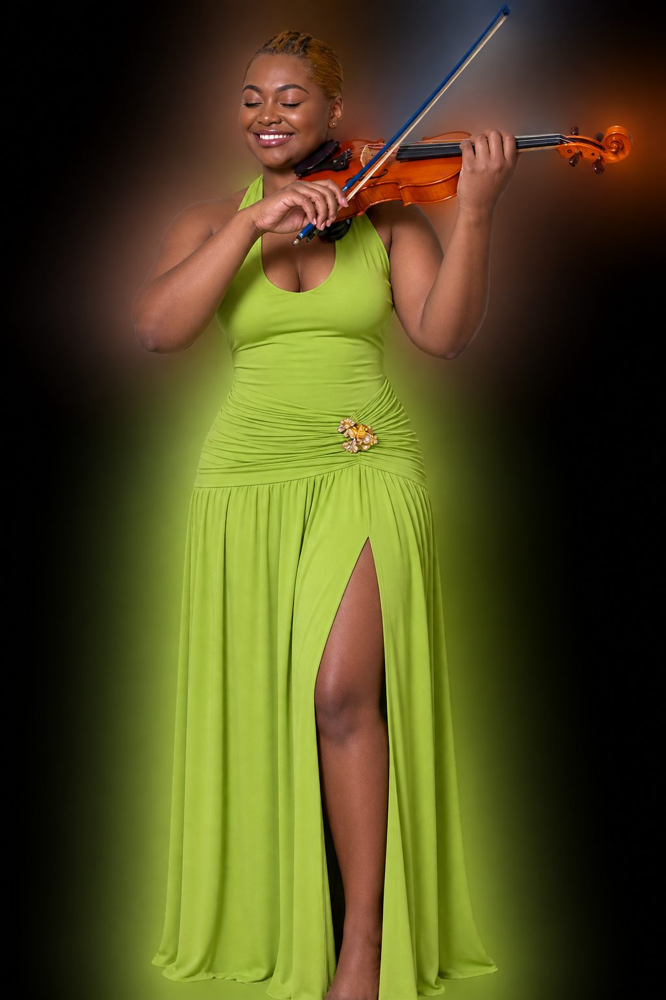
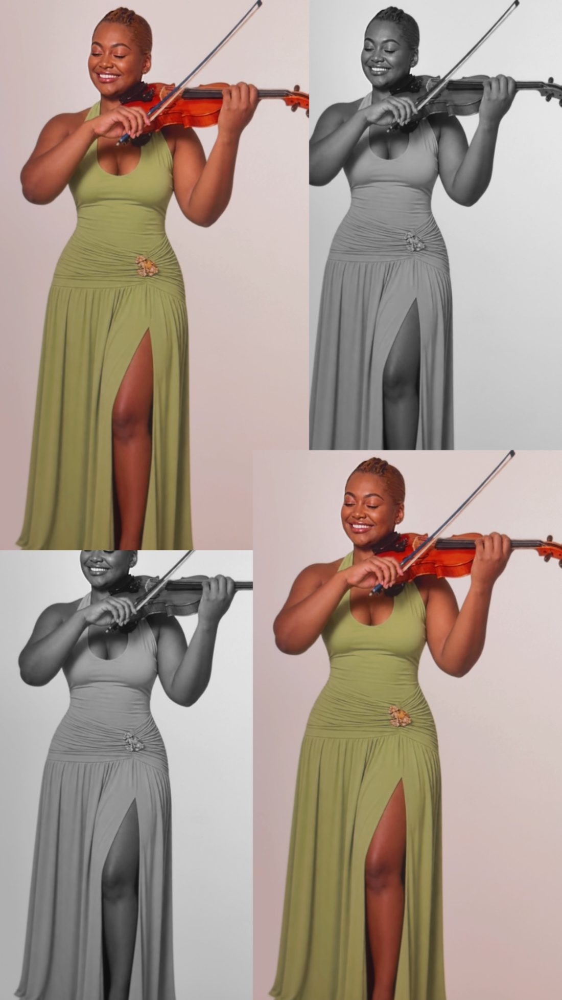

A violinist and violist whose artistry moves fluidly across classical, hip-hop/R&B, and gospel traditions — soloist, chamber musician, and teacher.
Book Maya Upcoming Shows
Maya Brown is a violinist and violist whose artistry moves fluidly across classical, hip-hop/R&B, and gospel traditions. Based between the DC Metropolitan area and Chicago, she has spent the past twelve years performing as a soloist and chamber musician in some of the country's most storied venues, building a career defined by range, precision, and a deep commitment to community music education.
Born and raised in Prince George's County, Maryland, Brown began her musical journey twenty-seven years ago at a K-8 performing arts school, picking up the violin at the age of five and adding the viola to her artistry at seventeen. She went on to complete Montgomery College's two-year music program with honors in Viola Performance, before continuing her studies at Roosevelt University's Chicago College of Performing Arts, where she studied Viola Performance and Music Education under Igor Fedotov, Lawrence Neuman, and Roger Chase.
"As an African American woman in a field where representation has historically been limited, I am honored to serve as a visible example of what is possible."
Whether performing on stage, recording in the studio, or collaborating with artists across musical genres, Brown is passionate about creating meaningful musical experiences. She hopes her journey encourages Black women and other underrepresented musicians to pursue careers in music boldly, knowing there is a place for their artistry and their voices.
When she isn't performing or teaching, Brown can usually be found listening to funk, slapping the electric bass, or spending time with her daughter. Deeply family-oriented, she credits her family's unwavering support as the foundation of her music career.
This November, Brown joins the Greenbelt Community Orchestra for a program pairing Holst's The Planets with Viet Cuong's Constellations.
Holst, The Planets & Viet Cuong, Constellations
Holst, The Planets & Viet Cuong, Constellations
A collection of arrangements by celebrated female artists, reimagined for solo viola — Brown's first full-length project as a recording artist.
A wide range of arrangements written for soloist, duo, and small ensemble settings, bringing string voicing to the music she grew up on.
Broadcast live from the Rockefeller Memorial Chapel with fellow Chicago College of Performing Arts string students, alongside violinist Sebastian Zagame and organist Thomas Weisflog.
Over the course of her career, Brown has performed with the Greenbelt Community Orchestra and the PG Philharmonic, and has shared the stage with collaborators including organist Thomas Weisflog. Her performance history spans some of the country's most storied stages.

An equally dedicated teacher, Brown has taught violin and piano at Ottley Music School, led general music education at Arlington Public Schools, and taught violin through the DC Strings Workshop at Payne Elementary's Saturday Academy — work that reflects her ongoing commitment to expanding access to music education for the next generation of musicians.
Violin & piano instruction
General music education
Violin, Payne Elementary Saturday Academy
For performances, recording sessions, collaborations, and press inquiries, please reach out directly.